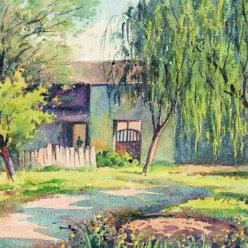
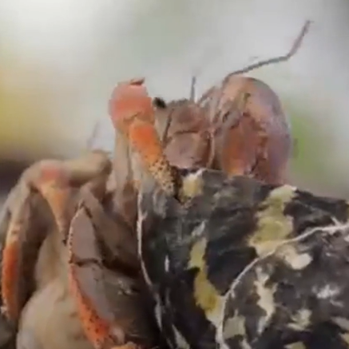
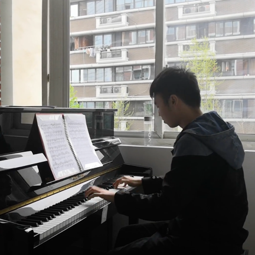
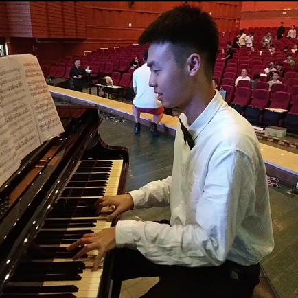
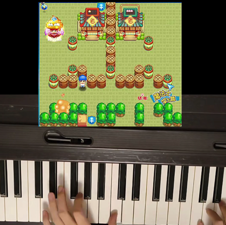
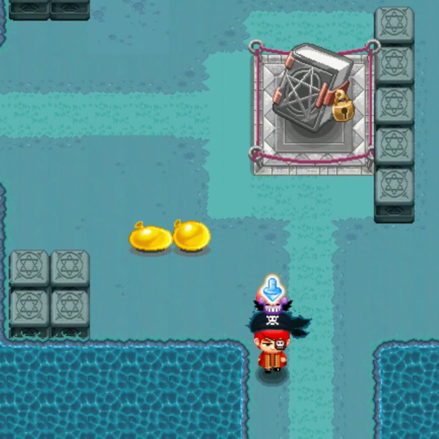

About Music
音乐之梦
Welcome to my blog. I am pleasant to share you my interesting works or experience here:)
欢迎来到我的博客，我非常荣幸能与您分享有趣的东西。这将是个非同寻常的博客！

百草园时光原创
《百草园时光》是鲁迅先生童年时代最快乐的时光, 尽管父亲和寿镜吾先生对自己严加管教, 孩童的天性在这一片自由的田地里徜徉. 本曲采用小快板节奏, 轻快的旋律能否给你带来生活的热情和对未来的憧憬...
Read more →
狮子山后原创
狮子山是位于香港九龙东的一座形似狮子的丘陵，以"狮子山"命名2021年第十七号台风寓意着台风的威力如同狮子般强大。本曲创作于台风"狮子山"到来后，描绘了香港被大雨敲打后的景象...
Read more →



平静的行板和华丽的大波兰舞曲（肖邦）演奏
肖邦一生共创作过15首波罗乃兹，而这首降E大调《平静的行板与华丽的大波兰舞曲》，作品Op.22，是这些作品中最清新、典雅、精致的一首，它具有1830年巴黎特有的优雅气息，也因此被贴上“巴黎”的标签...
Read more →

